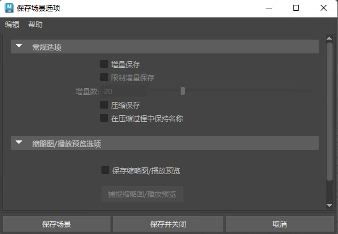

- 文件 > 保存场景(File > Save Scene) >


保存场景选项(Save Scene Options)
使用这些选项可设置选择“文件 > 保存场景”(File > Save Scene)时发生的情况。另请参见创建、打开或保存场景文件。
常规选项(General Options)
- 增量保存(Incremental save)
-
激活“增量保存”(Incremental Save)，以在 scenes\incrementalsave 文件夹中以相同名称创建备份文件夹。每次保存时，都会创建一个新的备份文件。这些备份文件的命名是递增式的（例如，filename.001.mb、filename.002.mb），因此不会覆盖以前的备份。默认情况下，可创建的增量备份数量是无限的。
- 限制增量保存(Limit incremental saves)
-
对 Maya 创建和存储的增量备份文件应用数量限制。默认限制值为 20 个增量。
- 增量数(Number of increments)
-
键入值或拖动滑块以指定限制。
注： 选中“限制增量保存”(Limit Increment Saves)复选框后，“增量保存”(Incremental Save)只能存储有限数量的增量备份文件。一旦达到限制，Maya 将删除最早的增量文件，并使用最新的增量备份文件作为替换。 - 压缩保存(Compressed save)
- 在输出时压缩保存文件 (gzip)。
注： 若要使用压缩模式，请确保在计算机上的相应路径中安装了 zip 实用程序。例如，在 Windows 上保存压缩文件之前，必须执行下列操作：
- 安装 gzip
- 将 gzip 在系统上的位置路径添加到系统环境变量中。gzip 的默认路径为 C:\Program Files (x86)\GnuWin32\bin
- 在压缩过程中保持名称(Preserve name during compression)
- 与“压缩保存”(Compressed save)一起使用时，保留常规文件扩展名，而不是附加 .gz。
缩略图/播放预览选项(Thumbnail/Playblast Options)
使用这些选项可创建要随场景一起保存的缩略图（单个图像）或播放预览（图像序列），以便在内容浏览器(Content Browser)中可以识别它。有关执行此操作的详细信息，请参见创建场景文件的缩略图和播放预览。
保存缩略图/播放预览(Save Thumbnail/Playblast)：选择此选项可创建场景的缩略图和播放预览。
捕捉缩略图/播放预览(Capture Thumbnail/Playblast)：单击此按钮后，活动视图面板中会出现黄色捕捉框，并将打开捕捉缩略图/播放预览(Capture Thumbnail/Playblast)对话框，从中可以设置选项并捕捉缩略图或播放预览。
删除缩略图/播放预览(Delete Thumbnail/Playblast)：单击此按钮可移除您在保存此场景文件之前创建的缩略图或播放预览。